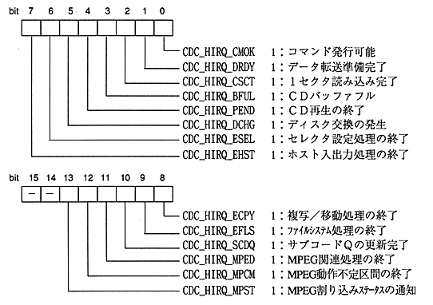

Title | Data | Data Name | No |

constant name | description |
|---|---|
CDC_ERR_OK | The function ended normally. |
CDC_ERR_CMDBUSY | When a command is issued, the command end flag is not 1. |
CDC_ERR_CMDNG | When the command is issued, the CMOK flag is not 1. |
CDC_ERR_TMOUT | Timed out. (Waiting for response and waiting for data transfer) |
CDC_ERR_PUT | Waiting sector could not be reserved while waiting for data transfer preparation by writing sector data. |
CDC_ERR_REJECT | Response to command is now REJECT. |
CDC_ERR_WAIT | The response to the command is WAIT. |
CDC_ERR_TRNS | The data transfer size is abnormal. |
CDC_ERR_PERI | Could not get periodic response. |